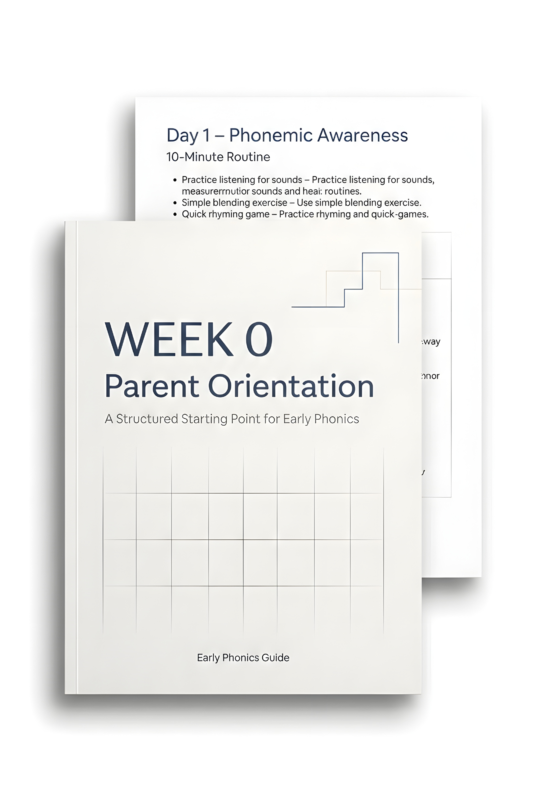

If reading time feels frustrating, it’s rarely about effort. Most early literacy confusion comes from unclear sequence — not bad parenting.
You’re not behind. You just need the right starting point.
Early reading skills build in a specific order.
Before blending words…
Before reading simple books…
Children need strong phonemic awareness — the ability to hear and work with sounds.
When this foundation is rushed or skipped, progress feels random.
Week 0 explains what should come first — and why.

Inside this parent orientation, you’ll understand:
No overwhelm. Just sequence.
This is designed specifically for ages 3–5.
No teaching background required.
No long lesson plans.
No pressure on your child.
Just a calmer place to begin.
Built around evidence-aligned early literacy principles used in structured reading approaches.
Not trends. Not classroom gimmicks. Structure.
If you’d like a clear, organized starting point before beginning the full phonics roadmap,
Start with Week 0.
Enter your email below and you’ll receive immediate access.